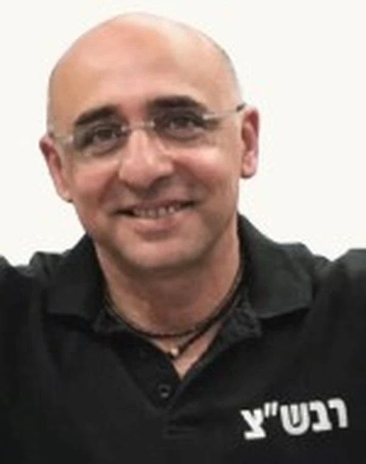

כפר עזה
אביאני שחר ז"ל
רבש"ץ כפר עזה, איש משפחה וקהילה
סיפור חיים
בנם הבכור של שרה ואשר. נולד ביום י"א באב תשכ"ז (17.8.1967) ביפו. אח בכור לשרון וסהר.
שחר גדל והתחנך ביפו. ילד חייכן, טוב לב ומלא שמחת חיים. בגיל ארבע-עשרה עבר ללמוד ב"כפר הנוער החקלאי מקווה ישראל" בחולון. הוא השתלב במהירות בפנימייה והפך לדמות מנהיגה ומובילה.
בן מסור להוריו ואח אוהב ותומך. שחר כיבד את הוריו והפיץ בבית אור ושמחה. עם שני אחיו טיפח קשר חם וקרוב. שרון אחיו תיאר אח גדול במלוא מובן המילה שעמד לצידו בכל הצמתים החשובים בחיים, דאג לו ושמר עליו.
בסיום לימודיו התגייס לצה"ל, וכשהשתחרר נסע לטיול הגדול בדרום אמריקה, שם צבר חוויות וחברים.
את שרון, בת קיבוץ כפר עזה, פגש במהלך הטיול, כשהגיע לשגרירות ישראל באקוודור כדי לקבל הודעות מהארץ. עד מהרה נרקמה ביניהם מערכת יחסים שהפכה לאהבה גדולה. בשנת 1991 נישאו וקבעו את ביתם בקיבוץ כפר עזה. במהלך השנים נולדו לבני הזוג ארבעה ילדים: לי-היא, יוני, שי-לי וגילי.
היה איש משפחה למופת, בעל מפרגן ואב מסור. סיפרה שרון: "שחר עמד איתן לצדי בטוב וברע לאורך כל השנים שלנו ביחד, הכיל אותי בשלמות". לילדיהם נהגה לומר: "תראו איזה אבא מושלם בחרתי לכם". שחר הרעיף אהבה על ילדיו וטיפח עם כל אחד מהם קשר אישי ומיוחד. ילדיו תיארו אב שהוא קודם כול חבר טוב, שאפשר לפנות אליו בכל בעיה, לשתף אותו ולספר לו הכול. הוא היה מעורב בחייהם וגאה בכל הצלחותיהם. "אם יהיו לי רק עשרה שקלים, אדאג לחלק אותם בין כל אהוביי, בין כל ילדיי, אשתי, וגם אם לא יישאר לי דבר, אביא להם הכול", אמר. גם עם הוריה של שרון היה לו קשר מצוין, הוא היה להם כמו בן ותמיד דאג להם לכל דבר, כאילו היו הוריו.
שחר היה רכז ביטחון שוטף צבאי (רבש"ץ) של קיבוץ כפר עזה, תפקיד שמילא במסירות רבה. הוא השרה ביטחון על התושבים ומדי בוקר ליווה את רכב הסעות התלמידים. כשבקיבוץ רצו להרגיע ילדים מפוחדים אמרו להם ששחר שומר עליהם. הוא היה רבש"ץ מוערך מאוד באוגדה, מח"טים ומג"דים ישבו איתו קבוע לקפה והתייעצו בו, ולא פעם זכה בתואר רבש"ץ מצטיין של החטיבה הצפונית.
בלט כדמות מוכרת ואהובה בקיבוץ. אהב את החיים בקיבוץ ותרם רבות לקהילה. החברים נהגו להתייעץ עמו בכל נושא - איזה רכב לקנות או איפה כדאי לעבוד, והוא תמיד היה שם בשבילם. כל אחד ידע שאפשר לבוא אל הפרגולה של שחר, לשבת על כוס קפה ולדבר על הכול. דלתו הייתה פתוחה, ובליבו הרחב ובמאור פניו תמיד הקשיב, ניסה לסייע ולתת עצה טובה.
תחביבו היה הפקת בירה ביתית. מדי שישי, ביתו הפך למקום מפגש. אנשים מכל רחבי הקיבוץ הגיעו לשתות את הבירה של שחר, או לאכול המבורגרים שהכין.
אדם רחב לב, נעים הליכות ומלא שמחת חיים, שחיוך נסוך על פניו. שחר תמיד ידע לשלוף בדיחה, מחמאה, או חיבוק מכל הלב. "תעשה טוב - והטוב יגיע אליך חזרה", נהג לומר. הוא האמין שאם מישהו מפזר טוב בעולם, הוא גם זוכה לטוב, והדביק אחרים בגישתו האופטימית לחיים. ליקיריו נהג לומר: "קל, קחו את החיים קל. החיים פשוטים, אנחנו אלה שמסבכים אותם", וגם "אם אני מבסוט, שכולם יהיו מבסוטים".
בשעות הפנאי אהב להאזין למוזיקה ולשיר בקולי קולות, גם אם זייף, במיוחד שירים של חנן בן ארי.
בשבת כ"ב בתשרי, שמחת תורה תשפ"ד, 7 באוקטובר 2023, בשעה שש וחצי בבוקר, פתח ארגון הטרור חמאס במתקפת פתע על ישראל. בחסות ירי מסיבי של טילים ורקטות מרצועת עזה לאזורים נרחבים בארץ חדרו אלפי מחבלים - יבשתית, ימית ואווירית, והחלו במתקפה רצחנית על יישובי עוטף עזה ועל שדרות, אופקים ונתיבות, על מְבַלי מסיבות טבע סמוך לקיבוצים רעים ונירים, על בסיסי צה"ל ועל העוברים בדרכים באזור. המחבלים רצחו כשמונה-מאות אזרחים בבתיהם, במכוניותיהם, אחרי שביצעו בהם פשעים כבדים. חטפו לרצועת עזה מאות ישראלים והחריבו, בזזו והעלו באש בתים ורכוש. מאות חיילים, שוטרים, אנשי כוחות הביטחון וחברי כיתות הכוננות המקומיות נפלו בקרב. בבוקר זה החלה מלחמה.
באותו בוקר שחר, אשתו שרון ושתי בנותיהם שי-לי וגילי היו בביתם בכפר עזה. הם התעוררו לשמע האזעקות ורצו לממ"ד. בנם יוני היה בחו"ל, ובתם לי-היא שהתה בדירתה בשכונה סמוכה בקיבוץ.
עם קבלת הדיווחים על חדירת מחבלים לקיבוץ, שחר הרבש"ץ מיהר ללבוש מדים ונפרד מבני משפחתו. הוא יצא לנשקייה הממוקמת מטרים ספורים מביתו, הקפיץ את חברי כיתת הכוננות וחילק להם כלי נשק.
מחבלים שהציבו מארב ליד הנשקייה החלו לירות לעברם. שחר וחברי כיתת הכוננות נלחמו בגבורה בעשרות מחבלים. במהלך חילופי האש, שחר נורה ונפצע. הוא המשיך להילחם במחבלים בכל כוחותיו, עד שמת סמוך לשעה שבע בבוקר.
רב-סמל ראשון שחר אביאני נפל בקרב ביום כ"ב בתשרי תשפ"ד (7.10.2023). בן חמישים ושש בנופלו. הובא למנוחות בבית העלמין בשפיים. הותיר אחריו אישה, ארבעה ילדים, הורים ושני אחים.
לאחר נפילתו הועלה לדרגת רב-סמל מתקדם.
כתבה שי-לי בתו: "היית בן אדם מדהים וזכיתי באבא הכי טוב בעולם. ומעבר לזה, היית גם האיש הכי טוב שאני מכירה. ולא, זה לא כי אתה אבא שלי... תודה על מי שהיית ועל מה שאתה, בן אדם קשוח אבל רגיש, ערס אבל קיבוצניק, זורם אבל זקן, מצחיק אבל רציני, ועוד מגוון של הפכים משלימים. תודה על החינוך שלך ותודה שתמיד לימדת אותנו להיות מאוחדים ושמחים... אבוליק שלי, תראה כמה אנשים הגיעו לכבודך... הייתי רוצה לקחת ממך את טוב הלב שלך... הייתי רוצה גם לקחת ממך את הקלילות.. הייתי רוצה לקחת עוד המון תכונות, אבל בעיקר רוצה אותך בחזרה".
ספד אחיו שרון: "כזה היית אחי. חבר, איש משפחה ובעל. ואבא ואח בכור ובן נאמן להוריו. ודוד - חלומו של כל אחיין... כשאני חושב על זה לרגע, בעצם היית אח בכור, אח בכור לכולם. שחר, אחינו הבכור, כל כך הרבה אור הבאת איתך. בשקט, בחיוך, בענווה. בישירות, בשמחה, באהבת חינם. שחר אחינו הבכור האהוב, רודף שלום וגיבור מלחמה. הקיבוצניק הכי בת-ימי שיש. נוח בשלום על משכבך תחת כנפי השכינה".
קיבוץ כפר עזה הפיק סרטון לזכרו של שחר ובו מסופר סיפור חייו וגבורתו. הסרטון זמין לצפייה ביוטיוב.
במסגרת פרויקט "מלחמה על הבית", ערוץ 24 הקדיש פרק לסיפור גבורתו של שחר.
תיכון "אורט כרמים" כרמיאל הפיק סרט ובו שרון, אחיו של שחר, מספר עליו.
בני משפחתו של שחר החליטו להציב לזכרו ארגזים עם פק"ל קפה במסלולי טיול, במקום נפילתו בכפר עזה ובמקומות נוספים ברחבי הארץ.